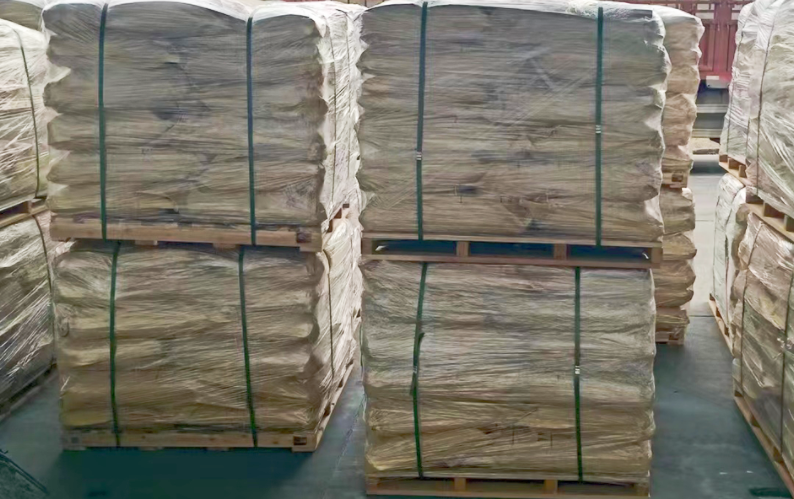
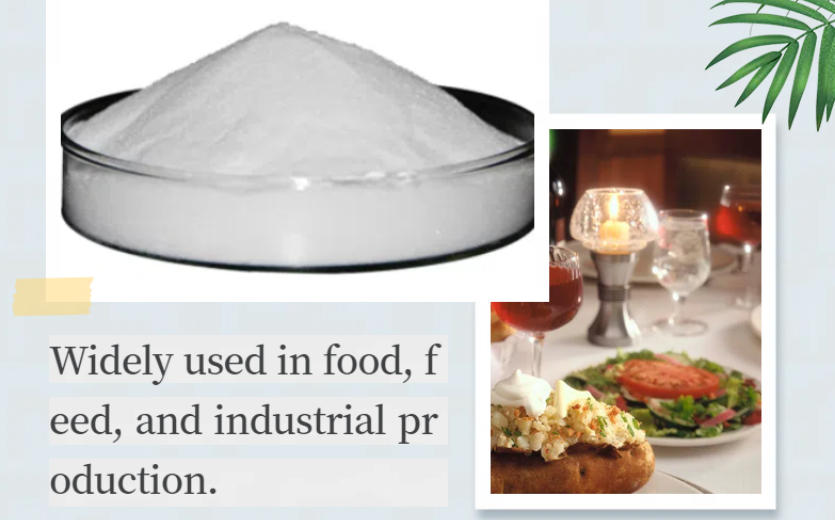
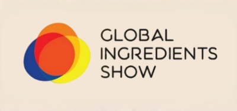
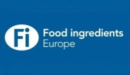
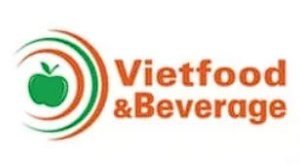

Como escolher entre STPP e SHMP
Compare o tripolifosfato e o hexametafosfato de sódio pela função, pelo grau, pela dissolução e pelos critérios de aceitação.
Ler guia de compraConhecimento de compras e atualizações da empresa
Compare graus e aplicações, prepare a documentação de compra e consulte o histórico de participação em feiras da Bespring Chemical.
Guias técnicos
Nossos guias ajudam a comparar graus de produtos químicos, definir requisitos e planejar compras internacionais. Para uma cotação, envie sua especificação e o mercado de destino.

Compare o tripolifosfato e o hexametafosfato de sódio pela função, pelo grau, pela dissolução e pelos critérios de aceitação.
Ler guia de compra
Compare MCP e DCP na mesma base de cálculo de cálcio e fósforo. Confira hidratação, granulometria, método de análise e documentos do lote.
Ler guia de compra
Confira especificação, FDS, certificado de análise, rótulo e documentos de transporte antes de confirmar a compra internacional.
Ler guia de compra
Compare grau, forma, teor, impurezas, métodos de análise e documentação de acordo com a aplicação.
Ler guia de compra
Confira a entidade contratante, o local de produção ou envase, a especificação e a documentação de produto e lote.
Ler guia de compra1 / 5
Feiras
Navegue no registro internacional de exposições da Bespring Chemical e abra cada página de eventos para datas, local e estande e foco de portfólio.

Bespring Chemical exibiu no Global Ingredients Show 2025 em Moscou de 15 a 17 de abril no estande A512.
Ver detalhes do evento
Bespring Chemical participou da Fi Vietnã 2024 em Cidade de Ho Chi Minh de 9 a 11 de outubro no estande B40.
Ver detalhes do evento
Bespring Chemical participou do Global Ingredients Show 2024 em Moscou de 23 a 25 de abril no estande D115.
Ver detalhes do evento
Bespring Chemical participou da Fi Europa 2023 em Frankfurt de 28 a 30 de novembro no estande 3.1A33.
Ver detalhes do evento
Bespring Chemical participou do Vietfood & Beverage 2023 em Cidade de Ho Chi Minh de 10-12 de agosto no estande A3.127.
Ver detalhes do evento1 / 5
Tem uma dúvida sobre um produto?
Envie o produto, grau, especificação e destino. Responderemos com as informações necessárias para uma revisão significativa da oferta.